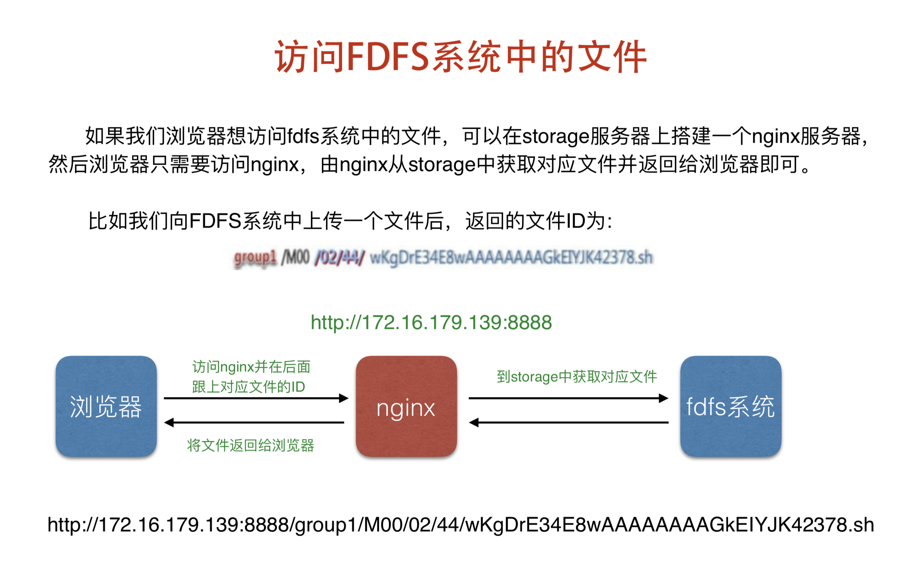
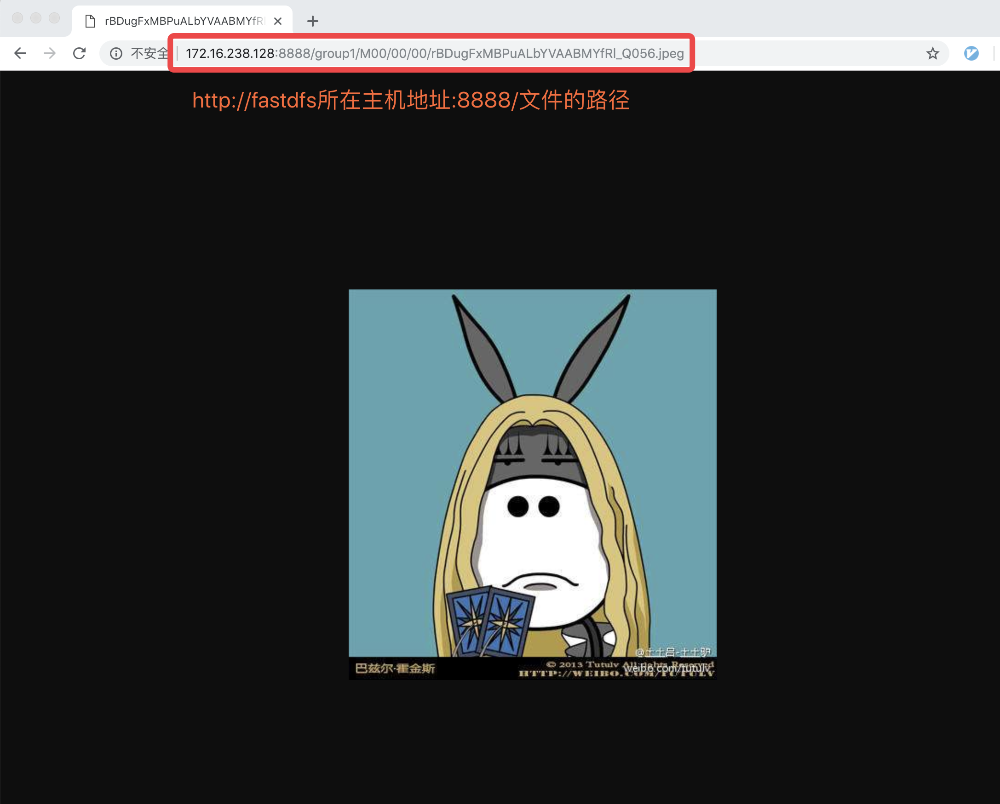
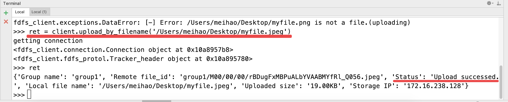

Docker 和 FastDFS 上传和下载文件
1. Docker 安装运行 FastDFS
1.获取 FastDFS 镜像
# 从远端仓库拉取镜像
# 其中 delron 是仓库名.
# fastdfs 是镜像名
sudo docker image pull delron/fastdfs
# 或者:
# 解压教学资料中本地镜像
# 1. 从发的资料中获取 fastdfs_docker.tar 文件
# 2. 把该文件放到桌面的 haha 文件夹中
# 3. cd haha
# 4. 运行以下的命令:
sudo docker load -i fastdfs_docker.tar
2.开启 tracker 容器
- 我们将 tracker 运行目录映射到宿主机的
/var/fdfs/tracker目录中。在命令行运行这句话, 开启 tracker 容器.
sudo docker run -dit --name=tracker --network=host -v /var/fdfs/tracker:/var/fdfs delron/fastdfs tracker

3.开启 storage 容器
- TRACKER_SERVER=Tracker 的 ip 地址:22122（ Tracker 的 ip 地址不要使用127.0.0.1）
我们将 storage 运行目录映射到宿主机的
/var/fdfs/storage目录中。在命令行运行这句话, 开启 storage 容器.
sudo docker run -dti --name=storage --network=host -e TRACKER_SERVER=tracker所在ip:22122 -v /var/fdfs/storage:/var/fdfs delron/fastdfs storage

4.查看宿主机映射路径


注意：如果无法重启 storage 容器，可以删除/var/fdfs/storage/data目录下的fdfs_storaged.pid 文件，然后重新运行 storage。
2. FastDFS 的 Python客户端
客户端的安装参考: https://github.com/jefforeilly/fdfs_client-py>
如何安装呢?
安装提供给大家的 fdfs_client-py-master.zip 到虚拟环境中
我们需要在代码所在的电脑中, 安装如下的三个文件:
把发的资料中的 fdfs_client-py-master.zip 放到项目的 scripts 目录中
然后使用 pip install 安装, 另外两个(mutagen, requests)则需要从网上下载安装
# 进入scripts目录:
cd scripts
# 运行安装:
pip install fdfs_client-py-master.zip # 安装本地文件
pip install mutagen # 联网下载安装
pip install requests # 联网下载安装
使用
使用 FastDFS 客户端，需要有配置文件
我们在 meiduo_mall / utils 目录下新建 fastdfs 目录
将提供给大家资料中的 client.conf 配置文件复制到这个目录中:
在 meiduo_mall / utils / fastdfs / 移入 client.conf
修改 client.conf 配置文件
我们需要根据个人的电脑, 更改如下的两项:
模板:
# base_path = FastDFS客户端存放日志文件的目录:
base_path=/Users/meihao/Desktop
# tracker_server = 运行tracker服务的机器ip:22122
# 老师电脑的ip为172.16.238.128.换成自己的
tracker_server=172.16.238.128:22122
效果如图所示:

上传文件需要先创建 fdfs_client.client.Fdfs_client 的对象，并指明配置文件
例如:
我们进入项目的 shell 环境中:
python manage.py shell
进入之后,添加如下代码:
# 先导入我们安装的 fdfs_client.client 客户端
from fdfs_client.client import Fdfs_client
# 使用添加的客户端创建一个对象
# 这里需要注意: 添加的路径应该为配置文件的绝对路径:
client = Fdfs_client('meiduo_mall/utils/fastdfs/client.conf')
# 使用刚刚创建的client调用方法, 上传图片(需要图片的绝对路径)
# 这里/Users/meihao/Desktop为老师电脑的路径,需要换成自己的.
ret = client.upload_by_filename('/Users/meihao/Desktop/demo.jpeg')
上传文件的方法有两种, 分别为:
# 这个是通过文件名上传文件
client.upload_by_filename(上传文件的绝对路径)
# 或是通过这个方法:
# 这个是通过文件内容上传文件:
client.upload_by_buffer(上传文件的bytes数据)
效果:
在 shell 环境中调用刚刚的代码, 然后得到result结果,
这个result结果是什么呢? 我们可以打印查看:
>>> from fdfs_client.client import Fdfs_client
>>> client = Fdfs_client('meiduo_mall/utils/fastdfs/client.conf')
>>> result = client.upload_by_filename('/Users/meihao/Desktop/demo.jpeg')
getting connection
<fdfs_client.connection.Connection object at 0x1098d4cc0>
<fdfs_client.fdfs_protol.Tracker_header object at 0x1098d4908>
>>> result
{
'Group name': 'group1',
'Remote file_id': 'group1/M00/00/00/wKhnnlxw_gmAcoWmAAEXU5wmjPs35.jpeg',
'Status': 'Upload successed.',
'Local file name': '/Users/meihao/Desktop/demo.jpeg',
'Uploaded size': '69.00KB',
'Storage IP': '172.16.238.128'
}
>>>
其中, 上面各个数据的参数在下面有解释.
Remote file_id 对应的值, 即为 FastDFS 保存文件的路径
ret = {
'Group name': 'Storage中组名',
'Remote file_id': '文件保存的位置',
'Status': '文件上传结果(成功还是失败)',
'Local file name': '上传文件的路径',
'Uploaded size': '上传文件的大小',
'Storage IP': 'Storage服务器的ip地址'
}

3.查看上传结果

所以, 我们打开浏览器, 访问地址:

思考：如何在 Storage 中找到的存储图片？
- 协议：
http
- IP地址：
172.16.238.128Nginx服务器的 IP 地址。- 因为 FastDFS 擅长存储静态文件，但是不擅长提供静态文件的下载服务，所以我们一般会将 Nginx 服务器绑定到 Storage ，提升下载性能。
- 端口：
8888Nginx服务器的端口。
- 路径：
group1/M00/00/00/wKhnnlxw_gmAcoWmAAEXU5wmjPs35.jpeg- 文件在 Storage 上的文件索引。
- 完整图片下载地址
http://172.16.238.128:8888/group1/M00/00/00/wKhnnlxw_gmAcoWmAAEXU5wmjPs35.jpeg
4. 自定义文件存储
自定义文件存储系统的方法如下：
0) 我们先新建一个文件 utils / fastdfs / fastdfs_storage.py
1）自定义文件存储类:
该类需要继承自 django.core.files.storage.Storage
2）我们在这个类中, 需要重写几个方法: save( ) exists( ) url( )
3）在 dev.py 文件中, 导入 fastDFS_client 所需要的设置:
# FDFS需要的配置文件路径(即: client.conf文件绝对路径).
FDFS_CLIENT_CONF = os.path.join(BASE_DIR, 'utils/fastdfs/client.conf')
# FDFS中storage和tracker位置.端口规定死是8888, ip换成自己的ip
# 老师电脑ip为172.16.238.128
FDFS_URL = 'http://172.16.238.128:8888/'
4）重写后效果为:
from django.core.files.storage import Storage
# 先导入我们安装的 fdfs_client.client 客户端
from fdfs_client.client import Fdfs_client
# 导入 settings 文件
from django.conf import settings
class FastDFSStorage(Storage):
# 我们再添加一个新的方法
# 该方法会在我们上传之前,判断文件名称是否冲突
def exists(self, name):
# 根据上面的图片我们可知,
# fdfs 中的文件名是由 fdfs 生成的, 所以不可能冲突
# 我们返回 False: 永不冲突
return False
def save(self, name, content, max_length=None):
'''重写上传文件的函数'''
# 我们需要将文件上传到 FastDFS 上面.
# 创建客户端对象:
client = Fdfs_client(settings.FDFS_CLIENT_CONF)
# 调用上传函数, 进行上传:
# 我们这里调用的是上面说过的, 根据文件内容上传方法.
result = client.upload_by_buffer(content.read())
# 判断是否上传成功:
if result.get('Status') != 'Upload successed.':
raise Exception('上传文件到FDFS系统失败')
# 上传成功: 返回 file_id:
file_id = result.get('Remote file_id')
# 这个位置返回以后, django 自动会给我们保存到表字段里.
return file_id
# 返回可访问到文件的完整的url地址
# 我们知道, 保存成功后, 返回的图片是不完整的, 所以在这里拼接完整.
def url(self, name):
return settings.FDFS_URL + name
如下图所示, 上传成功, 则会看到 Status 为 Upload successed.

6）让 FDFS 加载我们自定义的文件上传工具类, 不再使用系统默认的:
# 指定django系统使用的文件存储类:
DEFAULT_FILE_STORAGE = 'meiduo_mall.utils.fastdfs.fastdfs_storage.FastDFSStorage'
7）添加访问图片的域名:
- 在
/etc/hosts中添加访问 Storage 的域名
# Storage 的 IP 域名
172.16.238.128 image.meiduo.site